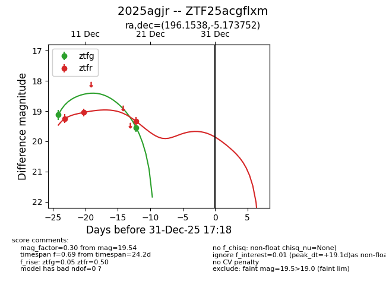
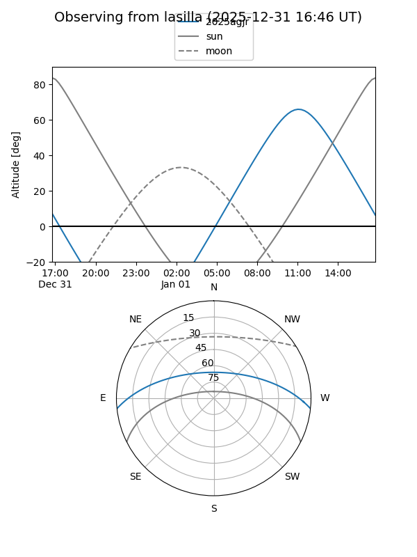
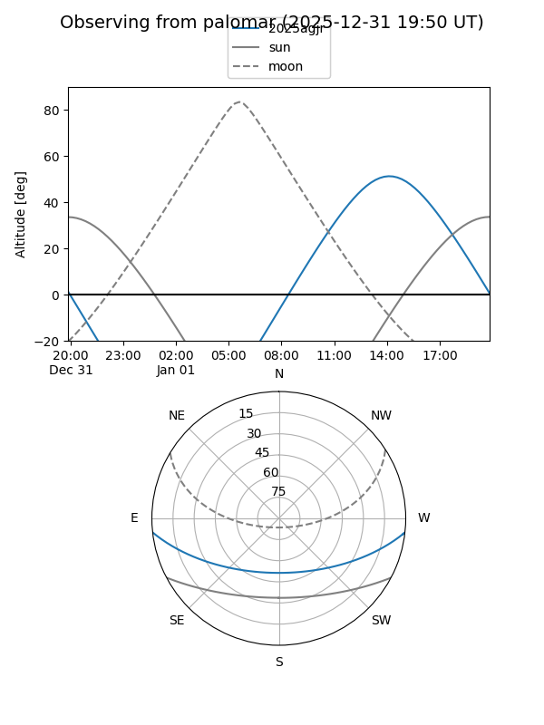
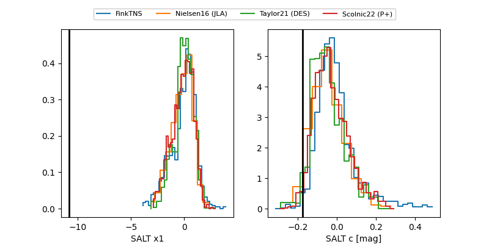

2025agjr
Target 2025agjr at 2025-12-19 13:32
Aliases and brokers:
FINK: fink-portal.org/ZTF25acgflxm
Lasair: lasair-ztf.lsst.ac.uk/objects/ZTF25acgflxm
ALeRCE: alerce.online/object/ZTF25acgflxm
TNS: wis-tns.org/object/2025agjr
YSE: ziggy.ucolick.org/yse/transient_detail/2025agjr
alt names
ZTF25acgflxm (ztf,fink_ztf)
2025agjr (tns,yse)
Coordinates:
equatorial (ra, dec) = 196.1538,-5.17375
equatorial (HMS+DMS) = 13:04:36.90,-05:10:25.51
galactic (l, b) = (309.0533,+57.54129)
Flags:
Photometry:
last ztfg=19.54, ztfr=19.33
2 ztfg, 3 ztfr detections
Lightcurve

Visibility


Additional plots
